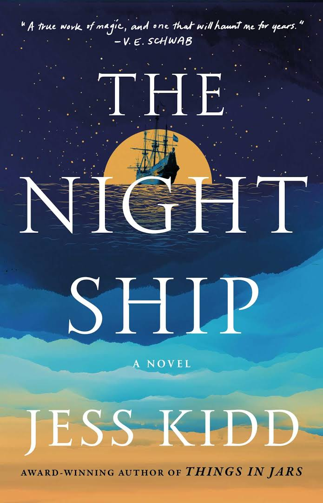

A collection of short horror stories exploring Filipino cultural myths and everyday fears. The stories are known for their subtle eeriness and psychological depth.
2009
The Ghost Bride
Yangsze Choo
Historical Fantasy, Romance
Set in 1890s Malaysia, involving ghosts, forbidden love, and family secrets.
2013
A Promise of Fire
Amanda Bouchet
Fantasy, Romance, Mythology
Features Cat, a magical "Kingmaker," caught in political struggles and a growing bond with Griffin.
2016
From Blood and Ash
Jennifer L. Armentrout
Fantasy, Romance, Adventure
Follows Poppy, a Maiden, as she navigates duty, forbidden love, and her kingdom's mysteries.
2020

The Night Ship
Jess Kidd
Historical, Thriller, Adventure
Intertwines 1629 and 1989 timelines with shipwreck mysteries and mythological monsters.